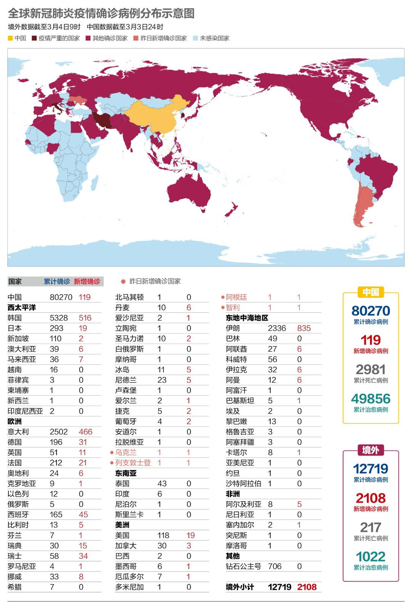
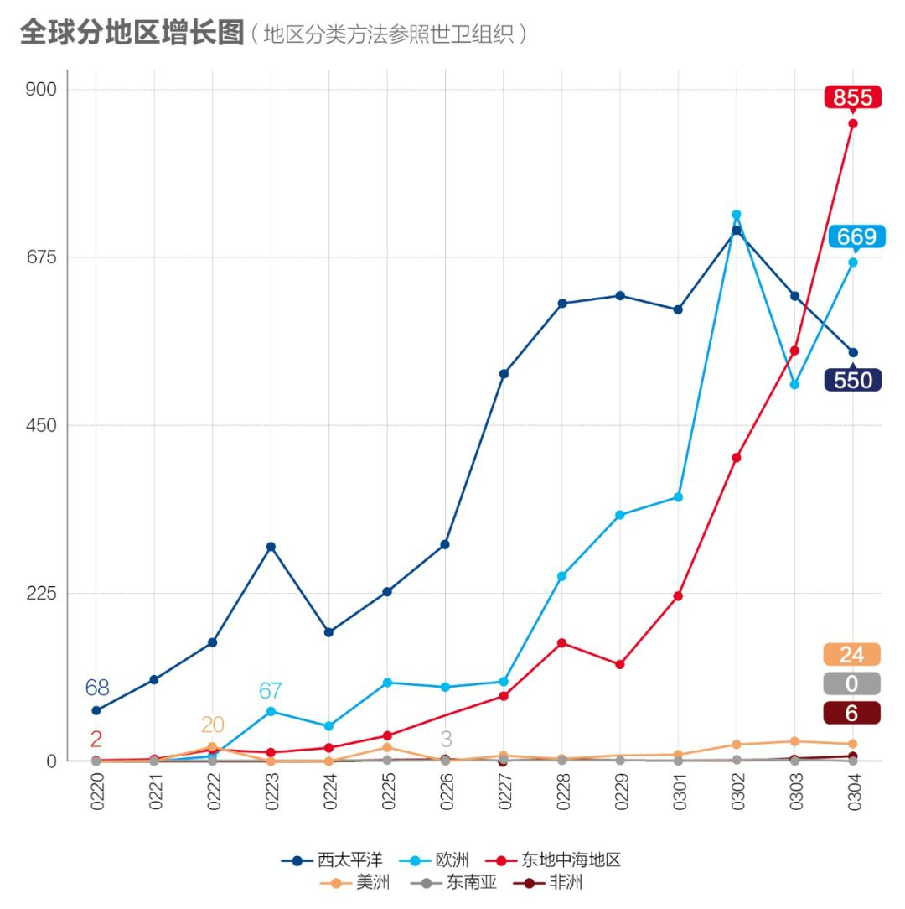
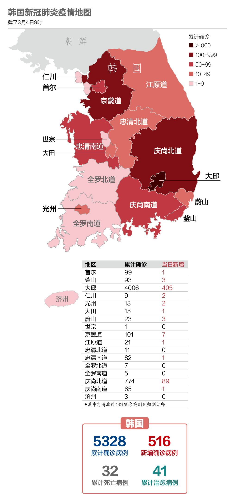

武汉中心医院又有医生殉职，韩国宣布进入战争状态，以及其他 25 条疫情新闻
原文链接 备份链接 根据丁香医生实时数据，截至 3 月 3 日 21:32 时，全国现存确诊病例 29930 例，累计确诊病例 80303 例，现存疑似病例 587 例。其中，重症病例 6806 例，死亡病例 2948 例， …

国内单日新增病例有望很快落到两位数，全国治愈率跨过60%节点。新冠疫情在海外大部分国家和地区（包括美国）还处于暴发的早期阶段。
文 |《财经》数据研究员徐进 图 |《财经》视觉中心
编辑 | 郝洲
一、 国内多地迎来零新增，海外蔓延仍未得到遏制
今日国内简述：国内3月3日报告累计病例80270例，新增119例，低于韩国、意大利、伊朗等国。新增病例114例来自武汉，广大非武汉地区5例，其中北京的3例有2例是境外输入（分别来自伊朗和意大利）。武汉仍保持在三位数，但上游数据均已充分收敛，当日新增疑似病例仅43例，已经连续4天保持在两位数水平。还有一个好消息是，武汉的治愈率跨过50%节点，全国治愈率则跨过60%。
二、 全球单日新增超过2000，病毒已蔓延至76国（不含中国）
图1

海外的确诊病例每日新增量已突破2000例，境外新增数已超过中国15倍。但治愈病例也在快速增长，总治愈人数比昨天增加258人。南美洲新增两个受感染国家（智利和阿根廷），令人担忧。
图2

在中国以外，疫情扩散主要集中在西太平洋（韩国）、欧洲（意大利、德国、法国和西班牙）和东地中海地区（伊朗）。
图3

伊朗的病例增长速度已经大大超过了其他地区，当地医疗条件和资源恐难以负荷。
三、92国（地区）对来自韩国的旅客采取入境管制措施
图4

韩国“新天地”教会成员（总数约为21.5万）仍在陆续接受病毒检测。新增病例主要集中在大邱市，占韩国新增总数的近八成。大邱累计确诊病例达4006例，庆尚北道达774例。
韩国外交部3月4日称，截至当天上午9时，因新冠疫情对韩国采取入境管制措施的国家和地区达到92个。中国目前只是部分地方政府对韩国实施入境限制措施。中方解释称，这些地方政府不只是针对韩国公民，限制措施是一视同仁的。
四、欧洲3/4的国家出现感染病例
图5

北欧的挪威和瑞典确诊病例数在快速增加。欧洲国家免于感染的国家已经所剩无几，出现确诊病例的国家数量占整个地区的3/4。
【特别说明：以上统计，2月28日前为世卫组织官方统计数据，数据截止时间为北京时间每日17时；从2月28日开始，数据由《财经》根据公开资料统计，截止时间为北京时间每日9时】
五、美国正在进行百万人检测计划
图6

新冠病毒在美国已经出现社区传播，但仍处于早期阶段。在美国“抗疫总司令”、副总统彭斯的率领下，美国大规模病毒检测正在进行，本周将进行100万份检测。有人预计确诊数将明显增加。从今天起，小编开始关注美国的疫情发展。
六、全球疫情数字速览：
1、【75例境外输入确诊】中国海关总署3月4日发布消息，截至当天零时，全国海关共发现入境有症状旅客6728人，其中新冠肺炎疑似病例779例，检出新型冠状病毒核酸检测阳性病例75例，
2、【降息50个基准点】当地时间3月3日，美联储宣布将联邦基金利率标准区间下调50个基准点，这是美联储自2008年以来的最大幅度降息，以此对抗新冠疫情的经济影响。标普500指数从下跌转为上涨，在2.8%左右后下跌超过1%，随后在央行下调基准利率50个基点后再次下跌，出现抛售。
3、【10%口罩库存】在美国参议院健康委员会听证会上相关官员称，如果新冠肺炎疫情在美国大规模暴发，美国目前库存的医用口罩只占需求量的10％。
4、【20%劳动力缺失】英国政府警告说，在最坏的情况下，英国可能有20%左右的劳动力（约600万人）因为新冠肺炎疫情而告病假。英国国民保健服务（NHS）也宣布，把新冠肺炎列为“全国性事件”，并下令属下医院要为如何处理大量涌入的病人做好准备。
5、【1580万名旅客返岗】中国交通运输部的数据显示，上周平均每天有1580万名旅客返岗。春节假期结束以来，中国已有近3亿人重返工作岗位，原因是越来越多的中国企业开始复工复产。
小结：国内单日新增病例有望很快落到两位数，全国治愈率跨过60%节点。对“输入性”病例进行有效防控已成为新的重点。新冠疫情在海外大部分国家和地区（包括美国）还处于暴发的早期阶段。

▲点击图片查看更多疫情报道
责编 | 黄端 duanhuang@caijing.com.cn
本文为《财经》杂志原创文章，未经授权不得转载或建立镜像。如需转载，请在文末留言申请并获取授权。
原文链接 备份链接 根据丁香医生实时数据，截至 3 月 3 日 21:32 时，全国现存确诊病例 29930 例，累计确诊病例 80303 例，现存疑似病例 587 例。其中，重症病例 6806 例，死亡病例 2948 例， …
原文链接 备份链接 从趋势上看，新冠肺炎全球大流行可能无法避免，中国需一边打好国内阻击战，一边应对全球疫情带来的新风险。 文 | 信娜 朱贺 编辑 | 王小 空格 鉴于中国境外受新型冠状病毒疫情影响的国家和病例数量持续增加，2月28日，世 …
原文链接 备份链接 韩国1月20日发现首例确诊病例，此后一个月疫情发展缓慢，到2月18日确诊31例。2月19日后突然暴增，一周新增超过1200例。 18日确诊的第31号患者，被视为“超级传播者”。 韩国新冠疫情的一大特征是，在特定群 …
原文链接 备份链接 IMF认为，若一切向好的方向发展，中国经济有望从二季度开始恢复正常。近日个别国家和地区确诊病例激增，确诊首例新冠病毒感染病例的国家和地区也在增加，是新感染群体的感染源越来越难以查明？还是疫情传播到了某个新的临界点？ …
原文链接 备份链接 【财新网】（记者 丁捷 综合）疫情爆发至今，湖北消化存量任务依然艰巨。随着全球疫情警报拉响，一些海外留学生、务工人员回国意愿比较强烈，境外输入型病例持续增加，新增病例数几乎是中国境内的9倍。另一方面，全国各地康复者“复 …